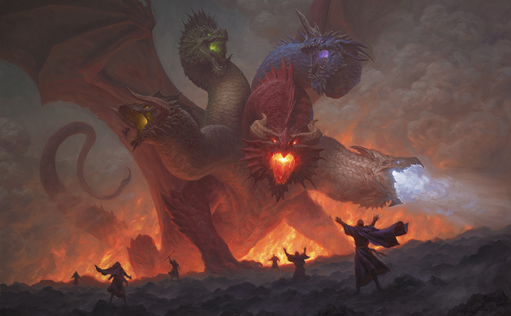

Volo's Musings
In recent times, Faerûn has been a whirlwind of activity, with heroes and villains alike leaving their indelible marks upon the world. First and foremost, the resurgence of ancient powers has sent ripples of both awe and concern throughout Faerûn. The return of the Netherese, long thought lost to the annals of history, has brought forth whispers of forgotten magics and hidden agendas. Tales speak of floating cities and arcane prowess unmatched, yet beneath the surface lie shadows of ambition and treachery. Meanwhile, the Sword Coast has seen its fair share of upheavals. The city of Waterdeep, bastion of civilization and intrigue, finds itself grappling with political intrigues and power struggles that threaten to unravel its carefully woven tapestry of alliances. Keep your eyes and ears open, dear readers, for the saga of Faerûn unfolds with each passing day, beckoning the brave and the curious to partake in its timeless tales.

Tiamat escapes!
Greetings, esteemed readers and fellow enthusiasts of lore and legend. It is I, Volothamp Geddarm, chronicler of Faerûn's marvels and mysteries, here to share with you the astounding tale of Tiamat's recent escape from the depths of Avernus, the first layer of the Nine Hells.
The news of Tiamat's freedom has sent shockwaves through the realms, stirring fear and uncertainty among mortals and immortals alike. For those unfamiliar, Tiamat is no ordinary dragon—she is the fearsome Queen of Chromatic Dragons, embodying the primal forces of greed, malice, and draconic might. Her presence in Avernus was a precarious balance, held in check by the infernal powers that govern that accursed plane.
In the wake of her emergence, chaos has erupted in various corners of Faerûn. Cults devoted to the Queen of Dragons have risen in fervor, spreading their influence and enacting dark rituals to further their sinister goals. Cities once thought safe now quiver at the thought of Tiamat's wrath descending upon them, her chromatic offspring trailing in her wake like a storm of destruction.